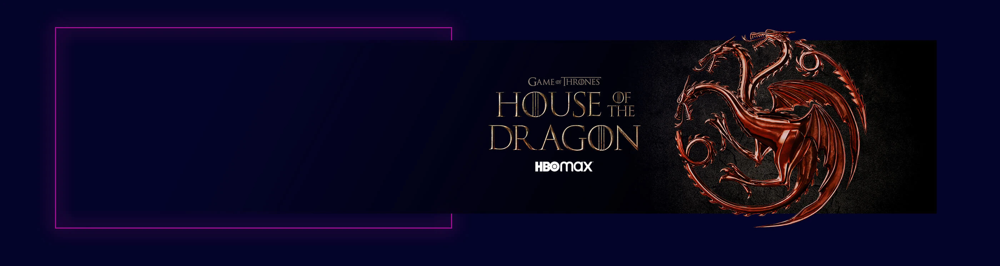

QUANDO SE JOGA O JOGO DOS TRONOS, VOCÊ VENCE OU VOCÊ MORRE. NÃO EXISTE MEIO-TERMO
Quem se senta no Trono de Ferro, controla os 7 Reinos. Isso significa uma luta de sangue e poder
em Westeros.
Não importa se você é team Stark, Lannister ou Targaryen: reviver essa história é sempre emocionante.

A série
Game Of Thrones se trata de famílias nobres dinásticas, seja competindo para reivindicar o
trono ou lutando por sua independência.
Atualizações
Estaremos sempre atualizando as novidades sobre Westeros
House of The Dragon em breve
Ambientada cerca de 300 anos antes dos eventos de Game of Thrones, o seriado derivado acompanha a
intensa guerra civil que cria uma enorme ruptura entre a família, em uma briga entre montadores
de dragões.